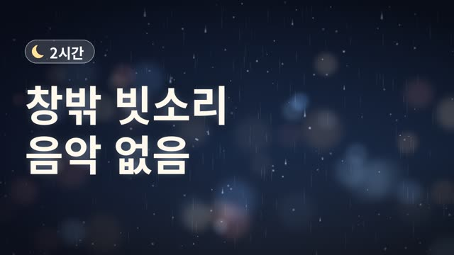
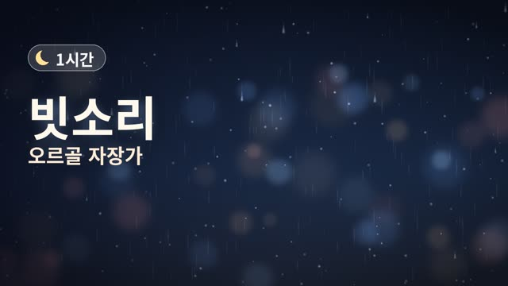

🌙 수면음악 보관함
매주 화·금 저녁 새 1시간 영상이 자동으로 올라옵니다. 영상 받기 → 사진 앱에 저장 → YouTube 앱에서 업로드 → 제목·설명 복사해서 붙여 넣기 → 썸네일 지정

☔ 창밖 빗소리 2시간 | 잠 잘 오는 빗소리 · 공부 · 휴식
2026-11-13 · 120분 · 787MB아동용 아님

업로드 설정 → 시청자층: 아니요, 아동용이 아닙니다 · 카테고리: 음악 · 썸네일: 위에서 받은 이미지
☔ 창밖 빗소리 2시간 | 잠 잘 오는 빗소리 · 공부 · 휴식빗소리, 빗소리 asmr, 잠잘때 빗소리, 수면 빗소리, 공부할때 빗소리, 백색소음, rain sounds, 수면음악, 자연의 소리, 1시간설명 보기
음악 없이 빗소리만 담았습니다. 창문에 부딪히는 빗방울과 멀리서 내리는 비의 낮은 소리가 1시간 동안 이어집니다. 🌙 2시간 동안 끊김 없이 이어지고, 시작은 천천히 커지고 마지막 1분은 소리가 서서히 작아져 잠을 깨우지 않아요. 💤 화면 밝기를 낮추고, 볼륨은 작게 틀어 주세요. ━━━━━━━━━━ 🎵 음원·영상 안내 이 영상의 음악, 자연의 소리, 배경 영상은 모두 이 채널에서 직접 프로그램으로 작곡·합성·제작한 창작물입니다. 외부 음원이나 샘플, 스톡 영상을 사용하지 않았습니다. 🔔 매주 화요일·금요일 저녁, 새 수면음악이 올라옵니다. 구독하고 함께 푹 자요. #빗소리 #빗소리asmr #잠잘때빗소리 #수면빗소리 #공부할때빗소리 #백색소음 #rainsounds #수면음악

🌧️ 빗소리 오르골 자장가 1시간 | 아기 잠 잘 오는 음악 · 수면음악
2026-11-12 · 60분 · 635MB아동용으로 설정

업로드 설정 → 시청자층: 예, 아동용입니다 · 카테고리: 음악 · 썸네일: 위에서 받은 이미지
🌧️ 빗소리 오르골 자장가 1시간 | 아기 잠 잘 오는 음악 · 수면음악빗소리 자장가, 오르골 자장가, 아기 수면음악, 자장가, 빗소리, 수면음악, 잠 잘오는 음악, 아기 잠재우기, lullaby, rain sounds설명 보기
창밖에 조용히 내리는 빗소리 위로, 매번 새로 작곡한 오르골 자장가가 천천히 흘러갑니다. 🌙 60분 동안 끊김 없이 이어지고, 시작은 천천히 커지고 마지막 1분은 소리가 서서히 작아져 잠을 깨우지 않아요. 🎼 이번 영상의 곡: 새로 작곡한 자장가 22곡 (파장조 3/4박자 ♩=64, 시장조 3/4박자 ♩=61, 라장조 3/4박자 ♩=56 등) 💤 화면 밝기를 낮추고, 볼륨은 작게 틀어 주세요. ━━━━━━━━━━ 🎵 음원·영상 안내 이 영상의 음악, 자연의 소리, 배경 영상은 모두 이 채널에서 직접 프로그램으로 작곡·합성·제작한 창작물입니다. 외부 음원이나 샘플, 스톡 영상을 사용하지 않았습니다. 🔔 매주 화요일·금요일 저녁, 새 수면음악이 올라옵니다. 구독하고 함께 푹 자요. #빗소리자장가 #오르골자장가 #아기수면음악 #자장가 #빗소리 #수면음악 #잠잘오는음악 #아기잠재우기